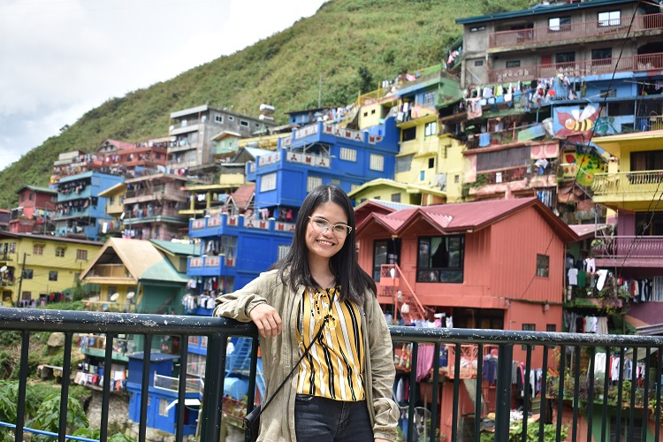
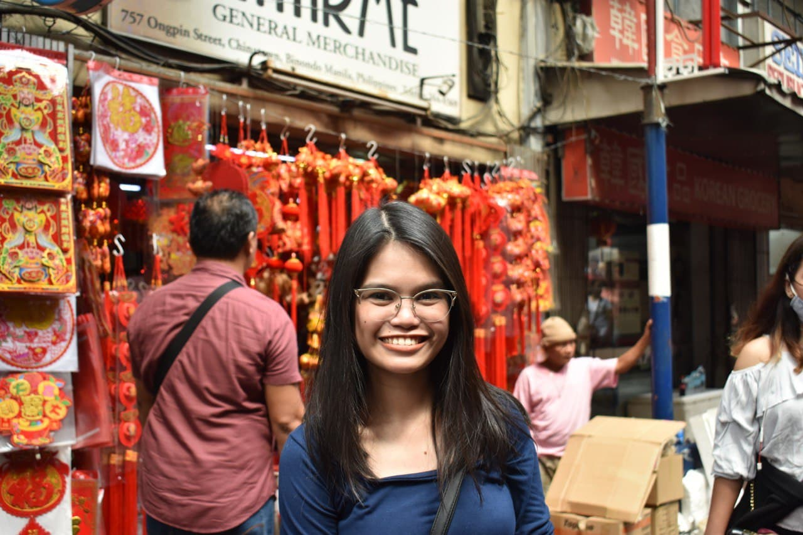
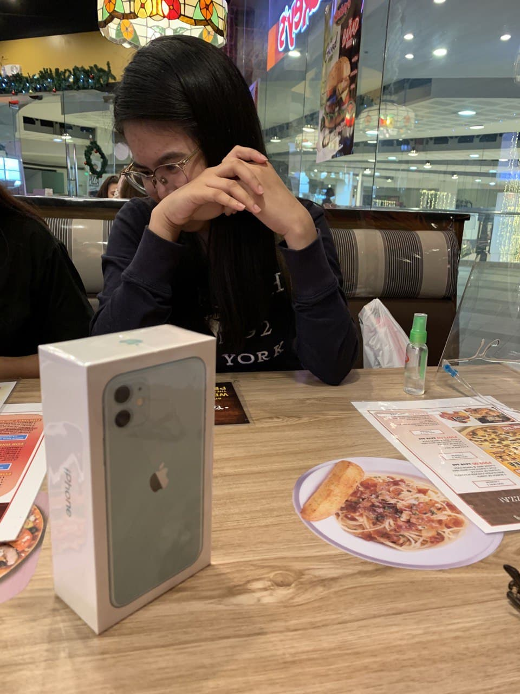

|  | So si Kamille. Ayun. Maganda. Tapos maganda ulit. Masarap din yayain kung saan saan. Biglaan lang din tong Baguio trip na ito. Namiss ko tuloy ang lamig ng Baguio. Ikaw ba Kams, miss mo na ba ex mo? Ano na nga palang nangyari dun? May anak na ba? |
| Gala at Makati. Tapos inom noh? Buti pa si Kams, mapaumaga or gabi, blooming. Parang di nasstress. Sana all. Another thing I love about Kams is lagi siyang willing maging model sa kahit anong panahon. Kahit nabilad na siya sa araw dun sa Baguio, todo pose pa din. | |
|  | Pre-COVID19 days. Nakapunta pa sa lugar ng mga chinese na hindi pa naka mask. As usual, maganda ulit si Kams. May bago ba? So this chinese new year, we made sure na makakasama si Kams kasi nung previous year, di siya nakasama. Ewan ko nga din ba kung bakit. Mukhang may kalandian pa siya nun. Nabubusy talaga kapag may harot no, Lorriane? |
| Syempre, support tayo kapag may gastos ang mga kaibigan natin. Well, syempre masaya ako sa success ng friends ko. And masaya ako ma-witness ang success ni Kams. Masaya akong makita na nakakapundar kayo. |  |
| Beautiful Kams, stay as you are. Libre mo kami sa first sahod mo ulit. Pag nakita mo na si the one, share mo ang details samen. Share mo din samen kapag nagbayad na yung pinsan mo. |